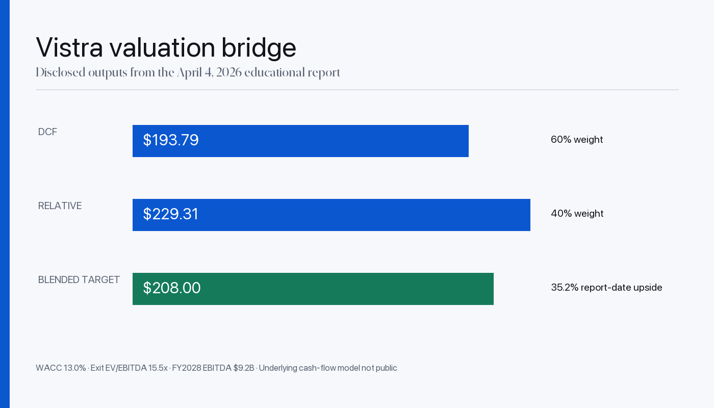

Investment Club President
UMass Boston
FINANCE MINDSET. BUILDER INSTINCT.
Research the business.
Build the next chapter.
M.S. Finance at UMass Boston. Investment Club President. Accounting & Finance Teaching Assistant. Explore the research, experience, and initiative behind the profile.
Explore like an analyst. No game required. No live market feed.
PICK A SIGNAL. OPEN THE STORY.
01 / THE INTERACTIVE RESEARCH DESK
Choose your lens, open a research ticker, or trace my experience. The interface changes; the evidence stays accessible.
Start with the thesis. Open the assumptions, models, and limitations.
Report · April 4, 2026
A catalyst-led power thesis. Follow the business, valuation assumptions, and risks—not a live share price.

EXPERIENCE / SELECT A CHAPTER
Finance & Accounting Intern
Fremont, CA · June–September 2026
Customer creditworthiness, financial-statement review, production costs, month-end close, and internal reporting. I also helped streamline recurring finance analysis through AI-assisted process automation.
LEADERSHIP / CURRENT ROLES, DEVELOPING INITIATIVES
UMass Boston
UMass Boston
HOW I THINK / EVIDENCE BEFORE CONVICTION
Start with dated sources and distinguish facts from interpretation.
Open the model, scenarios, and variables that drive the conclusion.
Study timing, balance-sheet risk, and competing explanations.
A useful thesis identifies what would invalidate it.
02 / THE ANALYST CHALLENGE
Three finance questions. Three chapters of my story. Try the interactive route—or skip straight to the essentials. Nothing on this site is locked behind a score.
CHECK 1 / 3 · VALUATION
Research, practical experience, and campus initiative—three parts of the same story. This was a learning interaction, not an investing assessment or a recommendation.
Complete the valuation check to reveal this chapter—or use the quick profile anytime.
I study companies through valuation, catalysts, scenarios, and explicit risk. Explore my dated research on Vistra, Take-Two, and First Solar.
Explore the research ↓Complete the expectations check to reveal this chapter—or go straight to the experience section.
Internships introduced me to creditworthiness, cost accounting, distressed accounts, corporate records, and reporting. Details matter when a decision depends on the numbers.
Trace the experience ↓Complete the downside check to reveal this chapter—or read the leadership section directly.
I’m Investment Club President and an Accounting & Finance Teaching Assistant at UMass Boston, while developing a club website, university-level competition, and departmental alumni database.
Meet the campus projects ↓SELECTED FINANCE WORK / 04
Educational and academic work—not professional deal execution, audited performance, or current recommendations. Each case states its date and limitations.
A catalyst-led power thesis using DCF and peer-relative valuation, with a separate post-report follow-up.
A franchise thesis balanced against premium valuation, launch timing, monetization, and bull/base/bear outcomes.
A company and industry report covering financial performance, DuPont analysis, competition, policy, and execution. The document itself does not state a publication date.
An academic allocation exercise connecting macroeconomic views with diversification, risk, and portfolio rationale.
LEADERSHIP & CAMPUS PROJECTS
Alongside my finance studies, I lead the Investment Club, work as a teaching assistant, and build projects for the UMass Boston community.
UMass Boston
Leading the Investment Club while co-developing its website and preparing to lead a university-level investment competition.
Accounting & Finance · UMass Boston
Serving as a teaching assistant in the university’s Accounting & Finance department alongside my M.S. Finance studies.
Work in progress · not completed launches
Co-developing a website with a friend for UMass Boston’s Investment Club.
Creating a university-level investment competition and preparing to lead it at UMass Boston.
Developing an alumni database and update script for UMass Boston’s Accounting & Finance department, designed to check for changes and refresh alumni details.
These initiatives are in progress. The two-week alumni refresh is planned, not presented as an active production schedule. No alumni records are published on this site.
ROLE PATHWAYS / EVIDENCE MAP
These are navigation paths into existing evidence—not claims of professional deal execution or investment authority.
Transaction mechanics, valuation, scenarios, capital-markets research, and presentation.
Open transaction evidence ↗Company theses, catalysts, risks, and invalidation conditions.
Open scenario case ↗Creditworthiness, cash-flow review, costs, variance, and reporting.
Open experience evidence ↓EXPERIENCE + ACADEMIC WORK / 06
Internships gave me experience with financial records, operating data, management reporting, and portfolio monitoring. Academic projects let me apply portfolio theory and econometrics.
I evaluated customer creditworthiness using Equifax business scores, balance sheets, income statements, and cash flows; analyzed production costs, material usage, and overhead allocation; and supported month-end close, budget tracking, and internal reporting. I also helped streamline recurring finance analysis and reporting through AI-assisted process automation.
FINANCE CAPABILITIES / EVIDENCE LINKED
No proficiency percentages. Each capability points to a report, academic project, or documented internship responsibility.
RESEARCH PREVIEW / 06 OF 21
The complete collection includes equity research, valuation, capital markets, portfolio and risk, derivatives, quantitative research, and CFA learning.
A dated note about protecting the study habit on tired nights—without presenting a self-reported streak as measured productivity or an exam result.
How a fixed exchange ratio transfers market-price risk, with reproducible premium, ownership, synergy, and sensitivity calculations.
A follow-up asking whether improving operating evidence means the thesis is early—or whether its expected catalyst is wrong.
Where assumptions, market mood, false precision, and circular logic can distort two standard valuation methods.
A qualitative framework for separating structural business impairment from temporary, potentially fixable setbacks.
A five-part checklist for comparing language, listening to unscripted answers, tracking omissions, and assessing guidance framing.
A visual thesis on the tension between AI-led financial disruption and continued reliance on investment banks for public-market liquidity.
Dated educational work · sources and limitations remain visible · not investment advice
EDUCATION + FINANCE FOUNDATION
This section reflects the qualifications recorded in my résumé. It does not add unsupported proficiency scores or invented credentials.
University of Massachusetts Boston. Expected completion: May 2027.
Ahmedabad University. Completed May 2025.
Financial analysis, portfolio management, cost accounting, ESG analysis, and academic research.
Advanced Excel, PowerPoint, Bloomberg Terminal, management presentations, and structured financial summaries.
CFA Level I study in progress. Bloomberg Market Concepts completed November 30, 2025.
FINANCE RESEARCH PROCESS / PRIVATE + PAPER ONLY
This private research workspace helps me organize sources, structure investment questions, and test educational hypotheses. AI-assisted tools support organization and iteration; they do not replace financial judgment or create professional investment authority.
HOW I USE THE PROCESS
Each note should show what evidence supports the idea, what remains unresolved, which assumptions drive the answer, and what would invalidate the thesis.
Separates primary evidence, secondary commentary, dated claims, and unresolved questions.
Records the mechanism, competing explanation, catalysts, risks, and a falsifiable view.
Uses explicit assumptions, sensitivity work, benchmarks, and paper-only evaluation where appropriate.
AI helps organize material and iterate on tools while finance analysis remains the decision surface.
No broker connection, live orders, client money, audited performance, or autonomous investment authority.
CONTACT / BOSTON, MA
M.S. Finance, UMass Boston · Expected May 2027. I’m interested in investment banking, equity research, and asset-management opportunities—where I can contribute careful analysis and learn from experienced finance professionals.